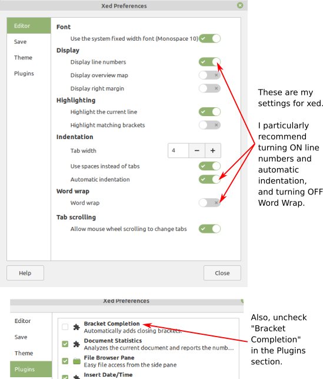

CS 124-02, Spring 2021
Lab 1: Introduction to Linux and Java
Welcome to CS 124, Introduction to Programming. In this course, you will learn how to write computer programs in the Java programming language. In the labs for this course, at least at the start, you will be using the Linux operating system. Later, you will have the option of using your own computer, if you prefer. See the link at the very end of this lab worksheet for more information about using your own computer.
This first lab of the semester introduces you to the Linux operating system and to Java. Because of all the new material on using Linux, this lab handout is rather long, and you should read through it in advance.
As part of the lab, you will write your first Java programs. However, since since the lab comes after just one class day, there is not much actual programming in this lab. You should turn in your work by the start of next week's lab. But if you have trouble turning in your work before then, you can get help and turn it in at the start of the lab. Instructions for turning in your work are at the end of this web page.
Getting Into Linux
The lab meets in room Rosenberg 009, in the basement of Rosenberg Hall. The computers in Rosenberg 009 are usually running the Windows operating system, but they are also set up to run Linux. There are actually many versions of Linux. The one we are using is "Linux Mint," "Cinnamon edition."
To get into Linux, if it is not already running, restart the computer, or start it if it is turned off. As the computer starts up, there is a point where you are given a choice between "Windows" and "Linux Mint". Press the down-arrow key once to select "Linux Mint", and press return. You have about 10 seconds to do this. After a short time, you will see a Linux login screen.
Log in using the Linux user name and password that were assigned to you. (Your Linux user name is the same as your user name for email and for the campus network, but the password is different.) You should soon see your Linux desktop, with an Application Menu in the bottom left corner of the screen.
Introduction to the Command Line
This section introduces the "command-line environment," where you interact with the computer by typing in commands. Most of the things that you can do on the command line can also be accomplished by menu and mouse, but the command line can be more efficient and is essential for a few tasks.
To access the Linux command-line environment, open a "Terminal." There is a Terminal icon in the panel at the bottom of the screen. You can click that to open a Terminal. Or open the Application Menu, start typing Terminal, and press return once Terminal is selected.
A Terminal is a window where you can type in commands for the computer. When a Terminal window is active and waiting for a command, you will see a blinking cursor next to a prompt. You type a command at this prompt, and press return. The computer will attempt to carry out the command that you enter. If there is an error, you will usually see an error message and another prompt. If the command is carried out successfully, you might not get any message at all, just the prompt where you can type another command. If a command takes a while to execute, or if for example it opens a window and you have to close the window before the command is complete, then you won't get a new prompt until the command completes. Typing Control-C in the terminal window will usually kill the command that is running and get you back to the command prompt.
An important concept in a command line environment is the "current directory." Your files are organized into directories, which are also called "folders." When you work in a Terminal window, you are working "in" a current directory, and the commands that you type apply to that directory. When you first open a Terminal, the current directory is your main or "home" directory. There are commands that you can type to create new directories and to move into a different current directory.
To get started, open a Terminal window, and enter these commands:
mkdir cs124 cd cs124
The first command, mkdir, creates a new directory, named cs124 inside the current directory. The second command, cd, changes the current directory. It moves you "into" cs124, so that you are now working in that directory.
I suggest that you keep your work for this course in your cs124 directory. I also suggest making a new directory, inside cs124, for each lab. To make the directory for this lab, and to move into that directory, enter the following commands while working in the cs124 directory:
mkdir lab1 cd lab1
Do not use spaces or other funny characters in directory or file names! Such characters can make some things more difficult when working on the command line.
If you log into the computer later and want to go back to working on Lab 1, you can get directly from your home directory into the lab1 directory by giving the command
cd cs124/lab1
The cs124/lab1 in this command is called a "path" and it refers to something named "lab1" inside a directory named "cs124" that is in your current directory. If you ever get confused about which directory you are working in, you can use the pwd command, which will tell you the full path to the current directory. Or you can use the command cd, with no directory name, to return to your home directory.
You will use the command line mostly to edit, compile, and run Java programs, using commands that will be introduced later in this lab. But there is a one more basic command that you should be familiar with: You can use the command passwd to change your Linux password. When you give this command, you will be asked to enter your current Linux password. Type it and press return. The characters that you type for your password will not be shown on the screen. You will then be asked to enter your new password twice in the same way. Your password will only be changed if the two copies of the new password are identical. You are not required to do this, but it's a good idea to change your password to something that you can remember easily.
For more information about working on the command line, see the "Command Line" section of the Linux information at https://math.hws.edu/about_linux/.
Your First Java Program
The point of this first exercise is simply to create a Java program, to compile that program, and to run it. You will use the same procedure for other, more interesting programs that you write.
To write Java programs, you need to use a text editor. A text editor lets you type plain text files. It is not the same as a word processor, which would allow you to add all kinds of formatting to the text. For the first part of the course, you will use a basic text editor named xed to write and edit your Java programs.
You should still be working inside your lab1 directory. To begin writing your first Java program, type the following command into the Terminal window:
xed Greeting.java
Don't forget to press return after typing the command. An editor window will open where you can type the program. The traditional first program just says "Hello World" — but let's make it a little more personal. Type the following lines of Java code into the editor window, except replace XXX with your own name. (Hint: Instead of typing it, you could also open this lab worksheet in a web browser, and use copy-and-paste to copy the code into the editor window!)
public class Greeting {
public static void main(String[] args) {
System.out.println("Hello, XXX!");
System.out.println("Pleased to meet you.");
}
}
After typing this, save your file and exit from xed by typing Control-Q or by selecting "Quit" from the "File" menu. Back on the command line, you should compile the program with the command
javac Greeting.java
If you have made no mistakes while typing the program, this command will succeed with no error messages; you will simply get another command prompt. If there are errors in the program, they will be listed. In that case, you have to edit the file to fix the errors — using the command xed Greeting.java again — and then saving and compiling the program again. Once the program has been compiled successfully, you will have a new file named Greeting.class. (If you aren't sure, you can use the command
ls
to check that Greeting.class has in fact been created. The ls command outputs a list of the files that are in the current directory.) Greeting.class is the compiled program. Once you have Greeting.class, you can run the program by entering the command
java Greeting
When you give this command, the computer will run the program. It should say Hello to you.
Before proceeding, you should experiment a bit. If you haven't already seen an error from the compiler, you should change the program to introduce an error, and see what happens when you compile it. (Try removing one of the semicolons, for example.) And see if you can figure out how to add another line to the output from the program.
It can quickly become tiresome to have to close the xed window every time you want to compile and run your program. To avoid this, add a "&" at the end of the command that you use to run the editor:
xed Greeting.java &
This will give you a command prompt without waiting for you to close the editor window. So, you will be able to move back and forth between the xed window and the Terminal window. However, you must always remember to save your program before you compile it. The compiler always works on the version that has been saved, not the version that is in the editor window
As another command-line trick, try using the arrow keys when you type commands. The left- and right-arrow keys work as you probably expect. The up- and down-arrow keys can be used to go back through the list of previous commands, to retrieve a command that you typed earlier. This can save a lot of typing when you are going through the edit-compile-run cycle over and over.
The GUI Approach
You are encouraged to learn to use the command line, and you will have to use it for certain things, such as compiling and running programs. However, you might be more comfortable with a Graphical User Interface for many tasks.
To open a file browser window where you can see all your files and folders, just double-click the "Home" icon on the desktop. (In a GUI context, directories are usually referred to as folders.) You can use the file browser to create, delete, move, copy, and rename files and directories. Specifically,
- To open a folder, to see what's inside, double-click the folder icon.
- To open a file with the default application for that file, double-click the file icon. A .java file will be opened with xed. To open a file with a different application, right-click the file icon and select the application from the menu that appears.
- To create a folder, right-click in the file browser window, but not on an icon. Select "Create New Folder" from the pop-up menu. Immediately after creating the folder, you can type in a new name for it.
- To create a new file, right-click the file browser window and select "Create New Document" / "Empty Document." You can then enter a name for the file.
- To move a file or folder, just drag the item to its new location, which can be another file browser window or the Desktop. To copy the item, right-click it and use copy-and-paste.
- To delete a file or folder, right-click the icon and select "Move to Trash." (To get a "Trash" icon on your desktop, use "Preferences" / "Desktop" from the application menu, and turn on "Trash" in the list of "Desktop Icons". You can then delete files and folders by dragging them into the trash, and you can open the trash to recover things that you delete by mistake.)
- To rename an item, right-click the icon, select "Rename", and type the new name.
- To open a terminal in a directory, right-click the directory icon or right-click in a file browser window that shows the contents of that directory, and select "Open In Terminal" from the popup menu.
To test this, open a file browser window, navigate to your lab1 directory, and make a new text file in that directory named "Miles.java". Double-click the file icon to open it in xed, and enter the following Java program into it:
public class Miles {
public static void main(String[] args) {
double miles, feetPerMile, feet;
miles = 2.5;
feetPerMile = 5280;
feet = miles * feetPerMile;
System.out.print("The number of feet in ");
System.out.print(miles);
System.out.print(" miles is ");
System.out.print(feet);
System.out.println();
}
}
Again, you could copy-and-paste this text from a web browser into the file.
Now, you want to compile and run the program. You can't do that in the GUI; you have to use the command line in a Terminal window. Go to a Terminal window that has lab1 as its current directory. (You must be working in the directory that contains Miles.java.) Now, you can use the command
javac Miles.java
to compile the program. Once it has compiled without error, you can use
java Miles
to run the program. Always be sure to save the file before compiling it — you will be compiling the version that is saved on disk, not the version that is in the xed window. The same thing applies if you have to fix errors in the program: Remember to save it before re-compiling it!
Improved Editing — Strongly Recommended!
The default preference settings in xed are not good for editing Java programs. For improved editing, you need to make some changes to the preferences. In any xed window, select the "Preferences" command from the "Edit" menu. Change the settings in the "Editor" section and in the "Plugins" section as follows:

"Word wrap" means that when you type past the right edge of the editor window, the computer automatically goes to the next line. You are probably used to that behavior. But in computer programs, end-of-lines are significant, and you need to control where they occur. So, turn off word wrap, and get used to pressing return when you want to end a line!
Further Assignments
Here are two more short assignments for you to work on. Remember that you will have to complete these outside of lab if you do not finish them during the lab period.
Make a copy of the program Miles.java, and name the copy Pounds.java. Modify the new copy so that instead of converting 2.5 miles into feet, it will convert 178 ounces into pounds. A pound contains 16 ounces. (Warning: For this program, you have to divide, not multiply. Multiplication in Java is indicated by "*"; division is indicated by "/".) You will need to change the first line of the program to read "public class Pounds" to match the name of the file.
As a final assignment, write a program to solve the following problem: You are throwing a little party for all of HWS's 1824 students. You want to have 3 glasses of root beer available for each student. A keg of root beer costs $87.69 and serves 210 glasses. How many kegs should you buy, and how much will they cost? Your program should do all the calculations starting from the basic data here, and then print out the answers to both questions. In your program, give names to the initial data, and work from there:
people = 1824; glassesPerPerson = 3; glassesPerKeg = 210; costPerKeg = 87.69;
The name of the file should be RootBeer.java.
To get full credit for this program, you should output the total cost in the standard format for dollar amounts, with two digits after the decimal point. Use the System.out.printf statement, which you can read about in Section 2.4.1 in the textbook. Also, you might want to read about the Math.ceil function in Section 2.3.1, because the answer for the number of kegs really should be a whole number.
Turning in Your Work
After doing all the assignments in this lab, you should have a directory named "lab1" that contains four programs. For each program, there should be a ".java" source code file and a ".class" compiled file. The Java files should be named Greeting.java, Miles.java, Pounds.java, and RootBeer.java. If you don't have all this, read though the lab again, and see what you missed!
In general, your work for a lab must be turned in before the start of the next lab. For this first lab, however, you can turn it in at the start of the next lab, in case you need last-minute help with turning in your work.
There is a homework submission directory on the Linux system that you will use for turning in work. The path to the directory is
/classes/cs124_Eck/homework/LastName
with "LastName" replaced by your own last name. You should turn in your work for this lab by copying your lab1 directory into your homework submission directory. To do that using the GUI, you need to open a file browser window showing your homework directory. To do that, click on "File System" on the left of any file browser window. Double-click "classes", then "cs124", then "homework", then the folder with your last name. You can then open another file browser window, and copy-and-paste your lab1 folder from there into your homework folder.
It is also possible to submit your work using the command line. You should be working in the directory that contains the lab1 directory. If you are working in the lab1 directory, use the command
cd ..
The .. in this command is a path that takes you to
the director that contains the current directory. If you have just logged in,
you can use the command cd cs124 to change into your cs124 directory.
The, use the command
cp -r lab1 /classes/cs124_Eck/homework/LastName
replacing "LastName" with your own last name, of courses. The cp command is used to copy. The "-r" option makes it copy an entire directory and its contents. If you don't get an error message, then the directory has been copied successfully. If you want that it worked, you can list the contents of your homework directory with the command
ls /classes/cs124_Eck/homework/LastName
Note that it's always OK to submit work more than once. The new version will replace the previously submitted version.
Working Outside of Lab
In general, you are not expected to finish lab exercises during the lab period. For future labs, you will need to do a lot of programming work outside of lab. You have many options for working on Java programs on your own.
- You can work on the computers in the Math/CS lab, Lansing 310. These computers are always running Linux and do not have to be rebooted; otherwise, they work the same as the computers in Rosenberg 009 lab.
- You can usually work in Rosenberg 009, when no classes are in session there. Computer science teaching fellows will be available in Rosenberg 009 from 7:00 to 10:00 PM, Sunday through Thursday, starting sometime soon.
- You can write, compile, and run Java programs on your own computer. But for that, you need to install a Java Development Kit and a text editor, and you will need to know how to use the command line on your own computer. Some instructions can be found through this link.